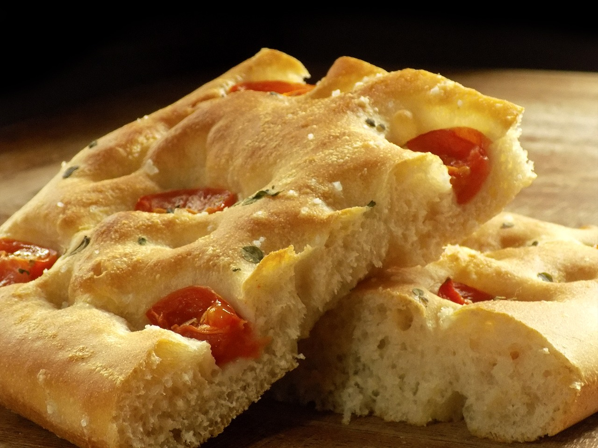

Focaccia

-
Pour une focaccia parfaite, prolongez les temps de repos.
Ingrédients :
- 15 g d'huile d'olive
- 300 g d'eau
- ½ cube de levure fraîche (20 g)
- 500 g de farine
- 10 g de sel
Garniture :
- 30 g d'huile d'olive
- 30 g d'eau
- 2 brins de romarin frais, lavé et séché
- 2-3 pincées de sel de mer en gros grains
- 10-15 tomates cerises
Instructions :
- Faites tiédir légèrement l'eau (environ 37°C) et dissolvez-y la levure. Laissez reposer 5 minutes
pour activer la levure.
- Dans un saladier, mélangez la farine, l'eau avec la levure, l'huile d'olive et le sel. Pétrissez à
la main ou avec un robot pétrisseur pendant environ 4 minutes jusqu'à obtenir une pâte souple et
homogène.
- Formez une boule avec la pâte, huilez-la légèrement, placez-la dans un saladier, couvrez avec un
torchon et laissez reposer 10 minutes.
- Transférez délicatement la pâte sur une plaque de cuisson recouverte de papier sulfurisé. Laissez
lever encore 10 minutes.
- Étalez la pâte délicatement à l'aide d'un rouleau à pâtisserie sans trop appuyer pour préserver les
bulles d'air.
- Laissez la pâte se détendre pendant 20 minutes supplémentaires.
- Mélangez l'eau, l'huile d'olive et le sel dans un petit bol ou un verre avec une fourchette ou un
fouet jusqu'à ce que le tout soit bien émulsionné.
- Une fois les 20 minutes écoulées, faites des trous dans la pâte avec vos doigts en appuyant
fermement.
- Versez l'émulsion d'huile, d'eau et de sel sur la pâte, en veillant à remplir tous les trous.
- Laissez lever à nouveau 20 minutes.
- Saupoudrez de romarin et de tomates cerises, puis enfournez selon les indications ou jusqu'à ce que
la focaccia soit bien dorée.
- Enfournez pendant environ 10-12 minutes, ou jusqu’à ce que les bords soient dorés mais que le centre
soit encore légèrement mou.